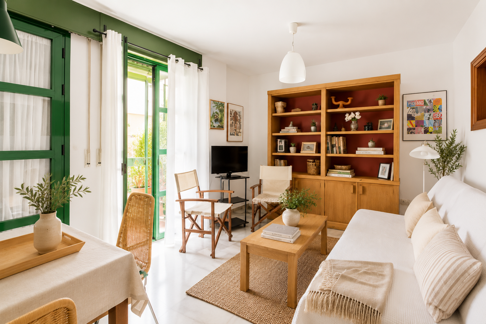
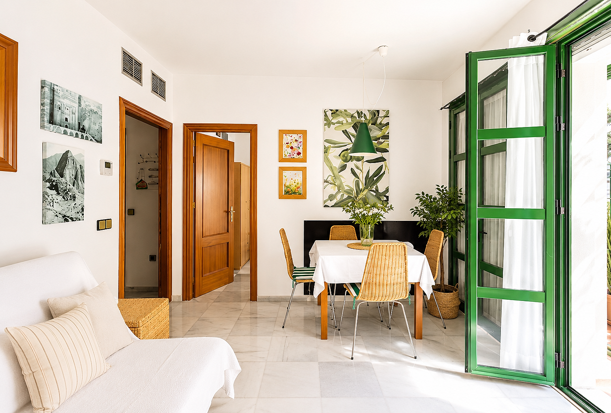
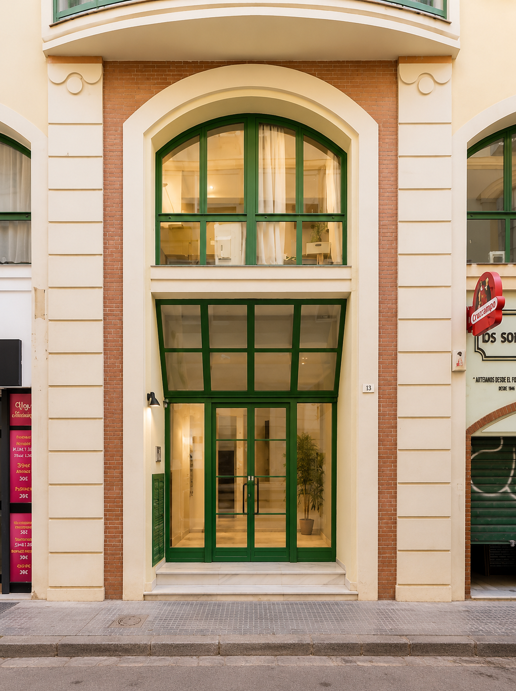

Centro Histórico · Málaga
Apartamento en venta en el Centro Histórico de Málaga
Panaderos 10
Un apartamento boutique para vivir Málaga de cerca.
La residencia
Una dirección singular, en el corazón de Málaga.
En una tranquila calle del Centro Histórico, Panaderos 10 combina el carácter de la arquitectura malagueña con la comodidad de una vivienda cuidadosamente mantenida.
Una residencia luminosa de un dormitorio, lista para disfrutar desde el primer día y a pocos pasos de la Catedral, Calle Larios, los museos y el puerto.
Ver características →
Interiores
La casa, en detalle.
Materiales cálidos, luz natural y una atmósfera serena que acompaña cada estancia.
Pulsa una fotografía para verla en pantalla completa.

Una dirección poco común
El ritmo de Málaga, a pie.
Una ubicación que permite disfrutar de las mejores direcciones del Centro Histórico sin renunciar a la calma de una calle residencial.
- 4 minCalle Larios
- 5 minCatedral de Málaga
- 6 minMuseo Picasso
- 12 minPuerto de Málaga
Una propiedad preparada
Todo lo esencial, resuelto.
La vivienda cuenta con documentación disponible bajo solicitud y licencia turística en vigor.
Edificio con ascensor
Cocina completamente equipada
Climatización
Excelente estado de conservación
Registro turístico VFT/MA/05879
Documentación disponible bajo solicitud
Apartamento en venta en el Centro Histórico de Málaga
Panaderos 10 representa una oportunidad excepcional para adquirir un apartamento de un dormitorio en pleno Centro Histórico de Málaga. Situado en una de las calles con más encanto de la ciudad, combina la tranquilidad de un edificio residencial con la cercanía a los principales atractivos culturales, gastronómicos y comerciales de la capital de la Costa del Sol.
La vivienda ofrece 51,32 m² construidos, ascensor, climatización y licencia turística VFT/MA/05879, características que la convierten tanto en una excelente residencia como en una atractiva inversión inmobiliaria.
A pocos minutos caminando encontrará la Calle Larios, la Catedral de Málaga, el Museo Picasso, el Teatro Romano, la Alcazaba y Muelle Uno. Su ubicación permite disfrutar del estilo de vida del Centro Histórico sin renunciar a la tranquilidad de una calle residencial.
Málaga se ha consolidado como uno de los mercados inmobiliarios más dinámicos del sur de Europa gracias a la llegada de empresas tecnológicas, la excelente conexión mediante AVE y aeropuerto internacional y una creciente demanda nacional e internacional de viviendas de calidad.
Si desea recibir información adicional, conocer la rentabilidad potencial de la propiedad o concertar una visita privada, puede ponerse en contacto directamente con Jaime Sureda.
Distribución
Una planta concebida para vivir con fluidez.
Salón, cocina, dormitorio y baño se organizan en una distribución práctica y equilibrada.
Visitas privadas
¿Le gustaría conocer Panaderos 10?
Solicite el dossier privado o reserve una visita con Jaime Sureda.